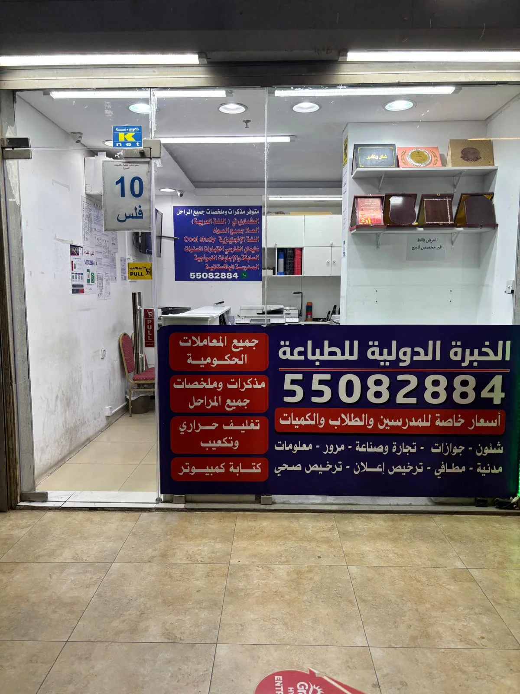

نظرة عامة على الخدمة
خدمة سحب سكانر للمستندات وتحويلها إلى ملفات PDF مرتبة، مع إمكانية دمج الصفحات وتسميتها وإرسالها إلكترونيًا.
كيف نساعدك؟
- مسح ضوئي واضح للمستندات
- ترتيب الصفحات بالترتيب الصحيح
- دمج عدة صفحات في ملف واحد
- تسمية الملف بصورة واضحة
- إرسال الملف عبر وسيلة مناسبة
حافظ على وضوح المستند
يتم ضبط الصفحات على سطح السكانر بصورة مستقيمة قدر الإمكان، مع التأكد من ظهور الأختام والحواف والكتابة المهمة.
تنظيم الملفات
يمكن تقسيم المستندات إلى ملفات منفصلة أو دمجها في ملف واحد بحسب نوع المعاملة أو الجهة المستلمة.
مستندات أصلية
يفضل إحضار المستندات الأصلية أو نسخ عالية الجودة للحصول على أفضل نتيجة، مع الحفاظ عليها أثناء عملية المسح.
خطوات طلب الخدمة
- أرسل اسم الخدمة وتفاصيل الحالة عبر واتساب.
- أرسل صورًا واضحة للمستندات أو الملف المتاح للمراجعة الأولية.
- نوضح لك النواقص والخطوة التالية قبل تجهيز الطلب.
- بعد تأكيد التفاصيل يتم تجهيز الطباعة أو النماذج أو الملف المطلوب.
أسئلة شائعة
هل يمكن دمج عدة مستندات؟
نعم، يمكن دمج الصفحات أو تقسيمها بحسب طلبك.
هل يمكن إرسال الملف إلى الهاتف؟
يمكن إرساله إلكترونيًا بالطريقة المتاحة بعد الانتهاء.
هل يمكن تحسين وضوح صورة قديمة؟
يمكن إجراء تحسينات بسيطة، لكن الجودة النهائية تعتمد على وضوح الأصل.
لإكمال معاملتك أو تجهيز ملفك بصورة أفضل، راجع أيضًا طريقة تحويل المستندات إلى PDF واضح، كيف تحصل على سكانر واضح للمستندات؟ وتصوير مستندات في حولي؛ فهذه الخدمات مرتبطة بالخطوات التالية أو بالمستندات المطلوبة لهذه الخدمة.